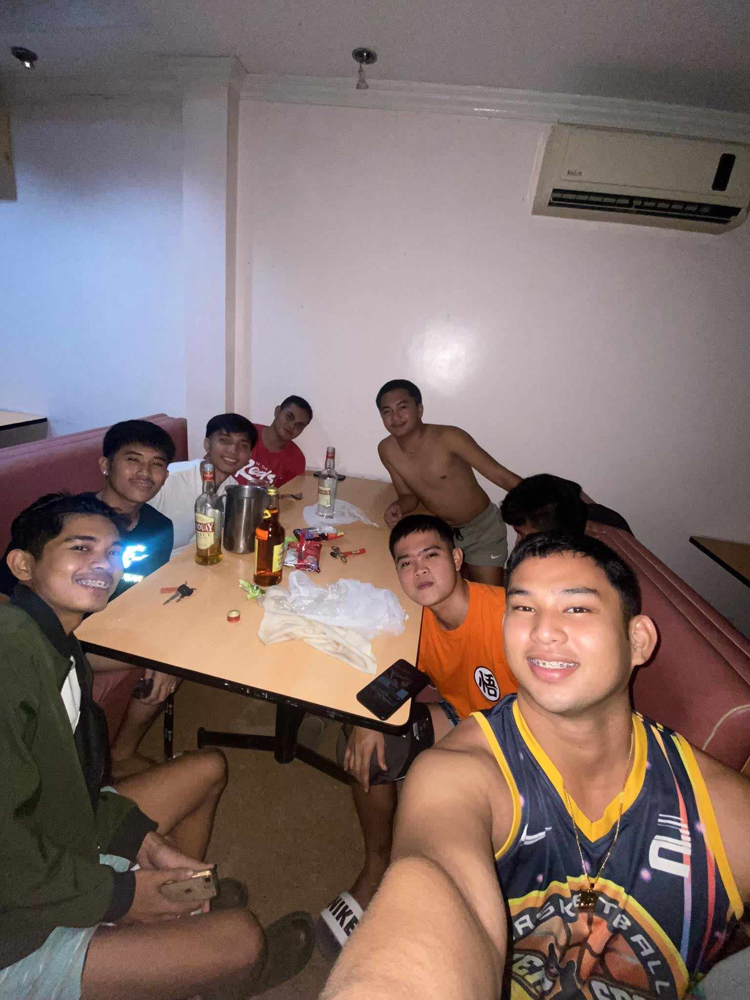
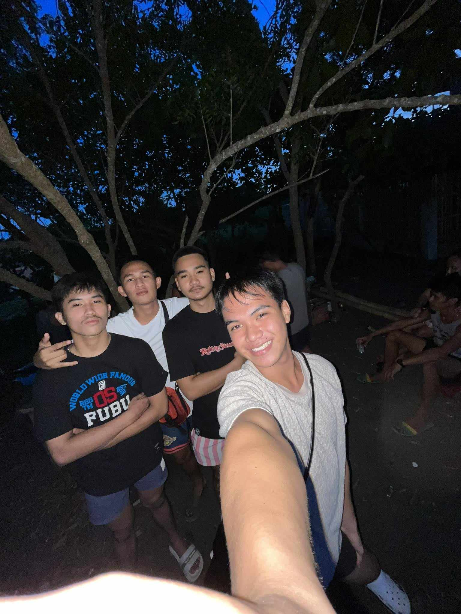

Story About My Childhood
Drexler, a boy born into a farming family in a secluded village, enjoyed a childhood defined by the simplicity of rural life. Surrounded by nature, he explored meadows and forests, cultivating a deep connection to the land. Family meals featured homegrown produce, and evenings brought lantern-lit gatherings in the village square. Drexler's education blended formal schooling with practical lessons from the environment. Despite the lack of material wealth, values of hard work, kindness, and an appreciation for simple pleasures enriched his upbringing. As he grew, Drexler carried these lessons into the wider world, cherishing the beauty found in small moments and the enduring bonds forged in his humble village.
Story about my Teenage
Drexler, now a teenager in the village, balanced increased responsibilities on the family farm with a growing desire to explore the world beyond the hills. His education expanded, and his curiosity led him to dream of life outside the village. Close friendships deepened, and together with his friends, he explored the outskirts, creating enduring bonds. As he approached adulthood, Drexler became a valued member of the community, bridging generations. Despite the timeless beauty of the village, the teenage years kindled a desire for exploration and new adventures, setting the stage for Drexler's journey into adulthood.
Story about my Adult
Drexler, now an adult, embarked on a journey beyond his village, exploring diverse landscapes and cultures. His humble upbringing became a source of strength, guiding him through the complexities of the wider world. Despite facing challenges, he contributed his skills and knowledge, bridging the gap between his roots and the broader world. Returning to the village as a seasoned traveler, Drexler shared his experiences, enriching the community with the wisdom gained. Standing at the crossroads of two worlds, he embodied the enduring power of humble beginnings and the boundless potential found beyond the horizon.
My hobbies
My hobbies are inside:
- COOKING
- PLAYING VIDEO GAMES
- SLEEPING

My hobbies are outside:
- CYCLING
- BASKETBALL
- JOGGING


My Favorites
My favorite color is BLACK

My favorite food is FRENCH FRIES

My favorite game is CALL OF DUTY

My favorite WEBSITE

My Friends
 True friends are like anchors in the shifting tides of life, providing unwavering support and understanding. In their company, laughter is genuine, and vulnerabilities are embraced without judgment. True friends celebrate victories and stand resilient during challenges. Their presence is a comforting reassurance, a shared history that binds hearts together. In the tapestry of life, true friends are the vibrant threads that add warmth, color, and depth to the narrative, making the journey richer and more meaningful.